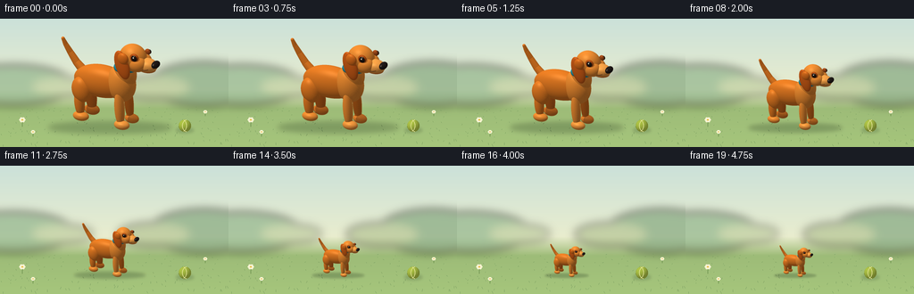
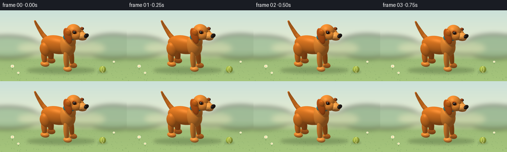

CODING AGENTS AS PIXEL WORLD MODELS
traex/GPT-6.1-Sol · instance_preservation_0048
点击播放 · 原生 RGB 像素
逐轮保存的候选
回放视频、检查图与代码变化。
每份候选均可单独播放。实际图片检查记录在下方工具轨迹中。
候选 01播放与检查图
点击播放 · 原生 RGB 像素


展开代码变化
--- 上一保存版本
+++ 本次保存版本
@@ -0,0 +1,190 @@
+from pathlib import Path
+import math
+import numpy as np
+from PIL import Image, ImageDraw, ImageFilter
+import artifact_io
+
+ROOT=Path(__file__).resolve().parent
+W,H=256,144
+S=3
+rng=np.random.default_rng(82)
+
+# Original analytic 3-D model. All geometry and lighting are generated here.
+shapes=[]
+def ell(c,r,col,rot=0,kind='fur'):
+ a=math.radians(rot)
+ R=np.array([[math.cos(a),0,math.sin(a)],[0,1,0],[-math.sin(a),0,math.cos(a)]],dtype=np.float32)
+ shapes.append((np.array(c,np.float32),np.array(r,np.float32),R,np.array(col,np.float32)/255,kind))
+def tube(a,b,ra,rb,col,n=14,kind='fur'):
+ a=np.array(a);b=np.array(b)
+ for t in np.linspace(0,1,n):
+ p=a*(1-t)+b*t;r=ra*(1-t)+rb*t
+ ell(p,(r,r,r),col,kind=kind)
+orange=(226,122,35); lightorange=(235,139,49); cream=(249,183,101); ear=(185,81,22)
+# The more distant pair of legs.
+ell((-.80,.26,.61),(.18,.15,.55),(201,102,29),-5)
+ell((-.77,.26,.16),(.25,.17,.16),(218,119,38))
+ell((.50,.27,.66),(.14,.14,.60),(209,108,29),-5)
+ell((.60,.27,.15),(.23,.16,.145),(226,128,43))
+# Raised tapered tail, with a smooth centerline.
+pts=[(-.99,.10,1.48),(-1.21,.10,1.69),(-1.42,.08,1.99),(-1.55,.02,2.25),(-1.61,-.03,2.44)]
+for k in range(len(pts)-1):
+ tube(pts[k],pts[k+1],.14-k*.022,.14-(k+1)*.022,orange,n=10)
+# Torso, shoulders, and neck.
+ell((-.28,0,1.30),(.94,.395,.52),orange,-3)
+ell((.39,0,1.37),(.45,.41,.58),lightorange,-10)
+ell((.53,0,1.76),(.33,.325,.48),lightorange,-17)
+# Near-side hindquarters, long front leg, and rounded feet.
+ell((-.84,-.25,1.00),(.32,.245,.41),orange,-12)
+ell((-.90,-.28,.57),(.16,.155,.45),orange,-6)
+ell((-.84,-.30,.145),(.26,.18,.145),lightorange)
+ell((.48,-.28,.67),(.155,.16,.60),lightorange,-4)
+ell((.57,-.30,.145),(.25,.18,.145),(240,151,61))
+# A close-fitting blue collar made of a ring of tiny smooth ellipsoids.
+for a in np.linspace(0,2*np.pi,50,endpoint=False):
+ ell((.55+.323*np.cos(a),.323*np.sin(a),1.94),(.050,.050,.072),(33,133,151),kind='cloth')
+ell((.72,-.327,1.88),(.085,.028,.096),(240,186,69),kind='metal')
+# Head and floppy ears.
+ell((.79,0,2.29),(.44,.37,.44),lightorange,-7)
+ell((.60,.35,2.12),(.23,.115,.44),ear,-16)
+ell((.61,-.355,2.15),(.235,.115,.465),(205,93,24),-18)
+# Slight upper-ear fold and muzzle cheeks.
+ell((.66,-.40,2.38),(.18,.10,.19),(218,109,28),-20)
+ell((1.04,-.17,2.20),(.275,.235,.245),lightorange)
+ell((1.04,.17,2.20),(.275,.235,.245),lightorange)
+ell((1.25,0,2.145),(.365,.265,.225),(242,159,70),-3)
+ell((1.285,0,2.02),(.27,.218,.088),(210,112,39))
+# Warm eye sockets, glossy dark eyes, and black rounded nose.
+ell((1.00,-.309,2.445),(.143,.075,.135),(180,79,20),-8)
+ell((1.024,-.362,2.453),(.097,.040,.094),(33,23,17),kind='eye')
+ell((1.146,.265,2.46),(.092,.071,.100),(164,75,26),kind='fur')
+ell((1.189,.293,2.467),(.066,.039,.073),(34,24,18),kind='eye')
+ell((1.570,0,2.23),(.111,.191,.109),(34,27,25),kind='nose')
+# Catchlights are fixed anatomical details, not flickering dots.
+ell((1.020,-.397,2.483),(.026,.012,.026),(255,246,222),kind='shine')
+ell((1.198,.273,2.496),(.018,.017,.018),(255,246,222),kind='shine')
+# A quiet canine smile along the visible side of the muzzle.
+pts=[(1.05,-.217,2.075),(1.19,-.257,2.064),(1.34,-.252,2.084),(1.43,-.226,2.114)]
+for a,b in zip(pts[:-1],pts[1:]): tube(a,b,.009,.009,(91,48,25),n=9,kind='mouth')
+# Subtle toe separations on the near front paw.
+for y in [-.355,-.26]:
+ tube((.743,y,.148),(.792,y,.091),.008,.006,(178,88,25),n=5,kind='mouth')
+
+# Orthographic camera: the dog genuinely changes size, never the background.
+D=np.array([-5.,9.,-4.5],np.float32);D/=np.linalg.norm(D)
+right=np.cross(D,np.array([0,0,1],np.float32));right/=np.linalg.norm(right)
+up=np.cross(right,D); up/=np.linalg.norm(up)
+resx,resy=720,600
+look=np.array([0.,0.,1.34],np.float32)
+span=3.83
+xx,yy=np.meshgrid((np.arange(resx)+.5-resx/2)*span/resx,(resy/2-np.arange(resy)-.5)*span/resx)
+orig=look+xx[...,None]*right+yy[...,None]*up-D*8
+orig=orig.astype(np.float32)
+tbest=np.full((resy,resx),np.inf,np.float32);sid=np.full((resy,resx),-1,np.int16)
+
+def intersect(o,d,sh):
+ c,r,R,col,kind=sh
+ q=(o-c)@R/r; v=np.asarray(d)@R/r
+ A=np.sum(v*v,axis=-1);B=np.sum(q*v,axis=-1);C=np.sum(q*q,axis=-1)-1
+ disc=B*B-A*C
+ t=(-B-np.sqrt(np.maximum(disc,0)))/A
+ return np.where((disc>=0)&(t>.0005),t,np.inf)
+for i,sh in enumerate(shapes):
+ t=intersect(orig,D,sh);hit=t<tbest
+ tbest[hit]=t[hit];sid[hit]=i
+mask=sid>=0
+P=orig[mask]+tbest[mask,None]*D
+ids=sid[mask]
+normal=np.zeros_like(P);albedo=np.zeros_like(P);gloss=np.zeros(len(P),np.float32)
+for i,(c,r,R,col,kind) in enumerate(shapes):
+ m=ids==i
+ if not m.any():continue
+ n=((P[m]-c)@R/(r*r))@R.T
+ n/=np.linalg.norm(n,axis=1)[:,None]
+ normal[m]=n;albedo[m]=col
+ gloss[m]={'fur':.10,'cloth':.08,'eye':.60,'nose':.38,'shine':.1,'metal':.38,'mouth':.02}[kind]
+light=np.array([-3,-5,8],np.float32);light/=np.linalg.norm(light)
+# Ray-traced cast shadows add natural depth between ears, legs, and muzzle.
+shadow=np.ones(len(P),np.float32)
+for sh in shapes:
+ t=intersect(P+normal*.003,light,sh)
+ shadow[np.isfinite(t)]=.0
+# Smooth ambient lighting with a warm key and cool sky fill.
+diff=np.maximum(normal@light,0)
+fill=np.maximum(normal@np.array([.3,.4,.86],np.float32),0)
+illum=.52+.49*diff*(.38+.62*shadow)+.13*fill
+half=light-D;half/=np.linalg.norm(half)
+spec=np.maximum(normal@half,0)**42*gloss*(.35+.65*shadow)
+# A tiny stable fur-grain pattern breaks up the plastic look.
+grain=(np.sin(P[:,0]*184+np.sin(P[:,2]*129))*np.sin(P[:,1]*218+P[:,2]*86))*.014
+rgb=albedo*(illum[:,None]+grain[:,None])+spec[:,None]*np.array([1,.94,.83])
+rgba=np.zeros((resy,resx,4),np.uint8)
+rgba[mask,:3]=np.uint8(np.clip(rgb*255,0,255));rgba[mask,3]=255
+dog=Image.fromarray(rgba,'RGBA')
+bbox=dog.getbbox();dog=dog.crop(bbox)
+dog.save(ROOT/'dog_model.png')
+
+# Quiet, sunlit garden; background and the tennis ball remain fixed.
+w,h=W*S,H*S
+Y,X=np.mgrid[:h,:w];yf=Y/h
+sky_top=np.array([203,225,217]);sky_low=np.array([238,239,205])
+a=np.minimum(yf/.64,1)[...,None]
+bg=sky_top*(1-a)+sky_low*a
+floor=np.array([154,184,119])+(yf[...,None]-.58)*np.array([28,33,11])
+blend=np.clip((yf-.55)/.15,0,1)[...,None]
+bg=bg*(1-blend)+floor*blend
+bg=Image.fromarray(np.uint8(np.clip(bg,0,255)))
+far=Image.new('RGBA',(w,h));dr=ImageDraw.Draw(far)
+for cx,cy,rx,ry,col in [(15,74,66,22,(139,177,136,170)),(229,73,61,24,(128,165,125,175)),(70,76,34,10,(166,188,132,110)),(172,77,40,13,(163,183,129,135))]:
+ dr.ellipse(((cx-rx)*S,(cy-ry)*S,(cx+rx)*S,(cy+ry)*S),fill=col)
+far=far.filter(ImageFilter.GaussianBlur(5*S));bg=Image.alpha_composite(bg.convert('RGBA'),far)
+# Sparse, miniature blades and a few daisies at the edges.
+dr=ImageDraw.Draw(bg)
+for _ in range(145):
+ x=float(rng.uniform(0,W));y=float(rng.uniform(99,H))
+ k=(y-95)/49
+ col=(111,148,89,int(25+55*k))
+ dr.line((x*S,y*S,(x+rng.uniform(-1.3,1.3))*S,(y-rng.uniform(1,2.8)*k)*S),fill=col,width=1)
+for x,y,s in [(25,121,1.5),(37,132,1.0),(230,109,.9)]:
+ dr.line((x*S,y*S,(x+.5)*S,(y-5*s)*S),fill=(105,143,76),width=2)
+ for a in np.linspace(0,2*np.pi,6,endpoint=False):
+ cx=x+1.5*s*np.cos(a);cy=y-5*s+1.2*s*np.sin(a)
+ dr.ellipse(((cx-.85*s)*S,(cy-.65*s)*S,(cx+.85*s)*S,(cy+.65*s)*S),fill=(246,243,209))
+ dr.ellipse(((x-.6*s)*S,(y-5.5*s)*S,(x+.6*s)*S,(y-4.5*s)*S),fill=(234,181,59))
+# Fixed tennis ball with curved ivory seams and contact shadow.
+ballshadow=Image.new('RGBA',(w,h));ds=ImageDraw.Draw(ballshadow)
+ds.ellipse((197*S,122*S,217*S,128*S),fill=(43,72,45,55))
+bg=Image.alpha_composite(bg,ballshadow.filter(ImageFilter.GaussianBlur(1.6*S)))
+ball=Image.new('RGBA',(w,h));bp=np.asarray(ball).copy()
+xx2=(X/S-207);yy2=(Y/S-120); rr=7.0
+bm=xx2**2+yy2**2<=rr**2
+nz=np.sqrt(np.maximum(0,1-(xx2/rr)**2-(yy2/rr)**2))
+norm=np.stack([xx2/rr,yy2/rr,nz],-1)
+bl=np.maximum(np.sum(norm*np.array([-.45,-.6,.66]),-1),0)
+colors=np.array([175,196,70])*(.65+.36*bl[...,None])
+bp[bm,:3]=np.clip(colors[bm],0,255).astype(np.uint8);bp[bm,3]=255
+ball=Image.fromarray(bp);ds=ImageDraw.Draw(ball)
+ds.arc((201*S,113.5*S,209*S,126.5*S),-78,80,fill=(231,232,157),width=2)
+ds.arc((204*S,113*S,216*S,127*S),102,257,fill=(231,232,157),width=2)
+bg=Image.alpha_composite(bg,ball)
+
+frames=[]
+for f in range(20):
+ t=f/19
+ # Large at the beginning, a continuous ease, and small at the end.
+ u=np.clip((t-.08)/.84,0,1); ease=u*u*(3-2*u)
+ scale=1-.66*ease
+ height=105*scale
+ dh=int(round(height*S));dw=int(round(dh*dog.width/dog.height))
+ im=bg.copy()
+ sh=Image.new('RGBA',(w,h));d=ImageDraw.Draw(sh)
+ cx=123*S;cy=124*S
+ d.ellipse((cx-69*S*scale,cy-8*S*scale,cx+69*S*scale,cy+4*S*scale),fill=(52,76,44,80))
+ sh=sh.filter(ImageFilter.GaussianBlur(max(1,3.1*S*scale)))
+ im=Image.alpha_composite(im,sh)
+ sprite=dog.resize((dw,dh),Image.Resampling.LANCZOS)
+ # The paws always touch exactly the same ground plane.
+ im.alpha_composite(sprite,(round(124*S-dw/2),round(125*S-dh)))
+ frames.append(np.array(im.convert('RGB').resize((W,H),Image.Resampling.LANCZOS)))
+artifact_io.save(np.stack(frames).astype(np.uint8),ROOT)
+print('Saved 20 RGB frames, 256 x 144, at 4 fps.')
可观测工具轨迹
实际执行的命令与返回图片。
命令 1exit 0
/bin/bash -lc 'ls -la && cat prompt.txt && cat GENERATION_RULES.md && cat task_spec.json'
命令 2exit 0
/bin/bash -lc "cat artifact_io.py && python - <<'PY'
import numpy,PIL
print('numpy/PIL ready')
PY"命令 3exit 0
/bin/bash -lc "cat > generate.py <<'PY'
from pathlib import Path
import math
import numpy as np
from PIL import Image, ImageDraw, ImageFilter
import artifact_io
ROOT=Path(__file__).resolve().parent
W,H=256,144
S=3
rng=np.random.default_rng(82)
# Original analytic 3-D model. All geometry and lighting are generated here.
shapes=[]
def ell(c,r,col,rot=0,kind='fur'):
a=math.radians(rot)
R=np.array([[math.cos(a),0,math.sin(a)],[0,1,0],[-math.sin(a),0,math.cos(a)]],dtype=np.float32)
shapes.append((np.array(c,np.float32),np.array(r,np.float32),R,np.array(col,np.float32)/255,kind))
def tube(a,b,ra,rb,col,n=14,kind='fur'):
a=np.array(a);b=np.array(b)
for t in np.linspace(0,1,n):
p=a*(1-t)+b*t;r=ra*(1-t)+rb*t
ell(p,(r,r,r),col,kind=kind)
orange=(226,122,35); lightorange=(235,139,49); cream=(249,183,101); ear=(185,81,22)
# The more distant pair of legs.
ell((-.80,.26,.61),(.18,.15,.55),(201,102,29),-5)
ell((-.77,.26,.16),(.25,.17,.16),(218,119,38))
ell((.50,.27,.66),(.14,.14,.60),(209,108,29),-5)
ell((.60,.27,.15),(.23,.16,.145),(226,128,43))
# Raised tapered tail, with a smooth centerline.
pts=[(-.99,.10,1.48),(-1.21,.10,1.69),(-1.42,.08,1.99),(-1.55,.02,2.25),(-1.61,-.03,2.44)]
for k in range(len(pts)-1):
tube(pts[k],pts[k+1],.14-k*.022,.14-(k+1)*.022,orange,n=10)
# Torso, shoulders, and neck.
ell((-.28,0,1.30),(.94,.395,.52),orange,-3)
ell((.39,0,1.37),(.45,.41,.58),lightorange,-10)
ell((.53,0,1.76),(.33,.325,.48),lightorange,-17)
# Near-side hindquarters, long front leg, and rounded feet.
ell((-.84,-.25,1.00),(.32,.245,.41),orange,-12)
ell((-.90,-.28,.57),(.16,.155,.45),orange,-6)
ell((-.84,-.30,.145),(.26,.18,.145),lightorange)
ell((.48,-.28,.67),(.155,.16,.60),lightorange,-4)
ell((.57,-.30,.145),(.25,.18,.145),(240,151,61))
# A close-fitting blue collar made of a ring of tiny smooth ellipsoids.
for a in np.linspace(0,2*np.pi,50,endpoint=False):
ell((.55+.323*np.cos(a),.323*np.sin(a),1.94),(.050,.050,.072),(33,133,151),kind='cloth')
ell((.72,-.327,1.88),(.085,.028,.096),(240,186,69),kind='metal')
# Head and floppy ears.
ell((.79,0,2.29),(.44,.37,.44),lightorange,-7)
ell((.60,.35,2.12),(.23,.115,.44),ear,-16)
ell((.61,-.355,2.15),(.235,.115,.465),(205,93,24),-18)
# Slight upper-ear fold and muzzle cheeks.
ell((.66,-.40,2.38),(.18,.10,.19),(218,109,28),-20)
ell((1.04,-.17,2.20),(.275,.235,.245),lightorange)
ell((1.04,.17,2.20),(.275,.235,.245),lightorange)
ell((1.25,0,2.145),(.365,.265,.225),(242,159,70),-3)
ell((1.285,0,2.02),(.27,.218,.088),(210,112,39))
# Warm eye sockets, glossy dark eyes, and black rounded nose.
ell((1.00,-.309,2.445),(.143,.075,.135),(180,79,20),-8)
ell((1.024,-.362,2.453),(.097,.040,.094),(33,23,17),kind='eye')
ell((1.146,.265,2.46),(.092,.071,.100),(164,75,26),kind='fur')
ell((1.189,.293,2.467),(.066,.039,.073),(34,24,18),kind='eye')
ell((1.570,0,2.23),(.111,.191,.109),(34,27,25),kind='nose')
# Catchlights are fixed anatomical details, not flickering dots.
ell((1.020,-.397,2.483),(.026,.012,.026),(255,246,222),kind='shine')
ell((1.198,.273,2.496),(.018,.017,.018),(255,246,222),kind='shine')
# A quiet canine smile along the visible side of the muzzle.
pts=[(1.05,-.217,2.075),(1.19,-.257,2.064),(1.34,-.252,2.084),(1.43,-.226,2.114)]
for a,b in zip(pts[:-1],pts[1:]): tube(a,b,.009,.009,(91,48,25),n=9,kind='mouth')
# Subtle toe separations on the near front paw.
for y in [-.355,-.26]:
tube((.743,y,.148),(.792,y,.091),.008,.006,(178,88,25),n=5,kind='mouth')
# Orthographic camera: the dog genuinely changes size, never the background.
D=np.array([-5.,9.,-4.5],np.float32);D/=np.linalg.norm(D)
right=np.cross(D,np.array([0,0,1],np.float32));right/=np.linalg.norm(right)
up=np.cross(right,D); up/=np.linalg.norm(up)
resx,resy=720,600
look=np.array([0.,0.,1.34],np.float32)
span=3.83
xx,yy=np.meshgrid((np.arange(resx)+.5-resx/2)*span/resx,(resy/2-np.arange(resy)-.5)*span/resx)
orig=look+xx[...,None]*right+yy[...,None]*up-D*8
orig=orig.astype(np.float32)
tbest=np.full((resy,resx),np.inf,np.float32);sid=np.full((resy,resx),-1,np.int16)
def intersect(o,d,sh):
c,r,R,col,kind=sh
q=(o-c)@R/r; v=np.asarray(d)@R/r
A=np.sum(v*v,axis=-1);B=np.sum(q*v,axis=-1);C=np.sum(q*q,axis=-1)-1
disc=B*B-A*C
t=(-B-np.sqrt(np.maximum(disc,0)))/A
return np.where((disc>=0)&(t>.0005),t,np.inf)
for i,sh in enumerate(shapes):
t=intersect(orig,D,sh);hit=t<tbest
tbest[hit]=t[hit];sid[hit]=i
mask=sid>=0
P=orig[mask]+tbest[mask,None]*D
ids=sid[mask]
normal=np.zeros_like(P);albedo=np.zeros_like(P);gloss=np.zeros(len(P),np.float32)
for i,(c,r,R,col,kind) in enumerate(shapes):
m=ids==i
if not m.any():continue
n=((P[m]-c)@R/(r*r))@R.T
n/=np.linalg.norm(n,axis=1)[:,None]
normal[m]=n;albedo[m]=col
gloss[m]={'fur':.10,'cloth':.08,'eye':.60,'nose':.38,'shine':.1,'metal':.38,'mouth':.02}[kind]
light=np.array([-3,-5,8],np.float32);light/=np.linalg.norm(light)
# Ray-traced cast shadows add natural depth between ears, legs, and muzzle.
shadow=np.ones(len(P),np.float32)
for sh in shapes:
t=intersect(P+normal*.003,light,sh)
shadow[np.isfinite(t)]=.0
# Smooth ambient lighting with a warm key and cool sky fill.
diff=np.maximum(normal@light,0)
fill=np.maximum(normal@np.array([.3,.4,.86],np.float32),0)
illum=.52+.49*diff*(.38+.62*shadow)+.13*fill
half=light-D;half/=np.linalg.norm(half)
spec=np.maximum(normal@half,0)**42*gloss*(.35+.65*shadow)
# A tiny stable fur-grain pattern breaks up the plastic look.
grain=(np.sin(P[:,0]*184+np.sin(P[:,2]*129))*np.sin(P[:,1]*218+P[:,2]*86))*.014
rgb=albedo*(illum[:,None]+grain[:,None])+spec[:,None]*np.array([1,.94,.83])
rgba=np.zeros((resy,resx,4),np.uint8)
rgba[mask,:3]=np.uint8(np.clip(rgb*255,0,255));rgba[mask,3]=255
dog=Image.fromarray(rgba,'RGBA')
bbox=dog.getbbox();dog=dog.crop(bbox)
dog.save(ROOT/'dog_model.png')
# Quiet, sunlit garden; background and the tennis ball remain fixed.
w,h=W*S,H*S
Y,X=np.mgrid[:h,:w];yf=Y/h
sky_top=np.array([203,225,217]);sky_low=np.array([238,239,205])
a=np.minimum(yf/.64,1)[...,None]
bg=sky_top*(1-a)+sky_low*a
floor=np.array([154,184,119])+(yf[...,None]-.58)*np.array([28,33,11])
blend=np.clip((yf-.55)/.15,0,1)[...,None]
bg=bg*(1-blend)+floor*blend
bg=Image.fromarray(np.uint8(np.clip(bg,0,255)))
far=Image.new('RGBA',(w,h));dr=ImageDraw.Draw(far)
for cx,cy,rx,ry,col in [(15,74,66,22,(139,177,136,170)),(229,73,61,24,(128,165,125,175)),(70,76,34,10,(166,188,132,110)),(172,77,40,13,(163,183,129,135))]:
dr.ellipse(((cx-rx)*S,(cy-ry)*S,(cx+rx)*S,(cy+ry)*S),fill=col)
far=far.filter(ImageFilter.GaussianBlur(5*S));bg=Image.alpha_composite(bg.convert('RGBA'),far)
# Sparse, miniature blades and a few daisies at the edges.
dr=ImageDraw.Draw(bg)
for _ in range(145):
x=float(rng.uniform(0,W));y=float(rng.uniform(99,H))
k=(y-95)/49
col=(111,148,89,int(25+55*k))
dr.line((x*S,y*S,(x+rng.uniform(-1.3,1.3))*S,(y-rng.uniform(1,2.8)*k)*S),fill=col,width=1)
for x,y,s in [(25,121,1.5),(37,132,1.0),(230,109,.9)]:
dr.line((x*S,y*S,(x+.5)*S,(y-5*s)*S),fill=(105,143,76),width=2)
for a in np.linspace(0,2*np.pi,6,endpoint=False):
cx=x+1.5*s*np.cos(a);cy=y-5*s+1.2*s*np.sin(a)
dr.ellipse(((cx-.85*s)*S,(cy-.65*s)*S,(cx+.85*s)*S,(cy+.65*s)*S),fill=(246,243,209))
dr.ellipse(((x-.6*s)*S,(y-5.5*s)*S,(x+.6*s)*S,(y-4.5*s)*S),fill=(234,181,59))
# Fixed tennis ball with curved ivory seams and contact shadow.
ballshadow=Image.new('RGBA',(w,h));ds=ImageDraw.Draw(ballshadow)
ds.ellipse((197*S,122*S,217*S,128*S),fill=(43,72,45,55))
bg=Image.alpha_composite(bg,ballshadow.filter(ImageFilter.GaussianBlur(1.6*S)))
ball=Image.new('RGBA',(w,h));bp=np.asarray(ball).copy()
xx2=(X/S-207);yy2=(Y/S-120); rr=7.0
bm=xx2**2+yy2**2<=rr**2
nz=np.sqrt(np.maximum(0,1-(xx2/rr)**2-(yy2/rr)**2))
norm=np.stack([xx2/rr,yy2/rr,nz],-1)
bl=np.maximum(np.sum(norm*np.array([-.45,-.6,.66]),-1),0)
colors=np.array([175,196,70])*(.65+.36*bl[...,None])
bp[bm,:3]=np.clip(colors[bm],0,255).astype(np.uint8);bp[bm,3]=255
ball=Image.fromarray(bp);ds=ImageDraw.Draw(ball)
ds.arc((201*S,113.5*S,209*S,126.5*S),-78,80,fill=(231,232,157),width=2)
ds.arc((204*S,113*S,216*S,127*S),102,257,fill=(231,232,157),width=2)
bg=Image.alpha_composite(bg,ball)
frames=[]
for f in range(20):
t=f/19
# Large at the beginning, a continuous ease, and small at the end.
u=np.clip((t-.08)/.84,0,1); ease=u*u*(3-2*u)
scale=1-.66*ease
height=105*scale
dh=int(round(height*S));dw=int(round(dh*dog.width/dog.height))
im=bg.copy()
sh=Image.new('RGBA',(w,h));d=ImageDraw.Draw(sh)
cx=123*S;cy=124*S
d.ellipse((cx-69*S*scale,cy-8*S*scale,cx+69*S*scale,cy+4*S*scale),fill=(52,76,44,80))
sh=sh.filter(ImageFilter.GaussianBlur(max(1,3.1*S*scale)))
im=Image.alpha_composite(im,sh)
sprite=dog.resize((dw,dh),Image.Resampling.LANCZOS)
# The paws always touch exactly the same ground plane.
im.alpha_composite(sprite,(round(124*S-dw/2),round(125*S-dh)))
frames.append(np.array(im.convert('RGB').resize((W,H),Image.Resampling.LANCZOS)))
artifact_io.save(np.stack(frames).astype(np.uint8),ROOT)
print('Saved 20 RGB frames, 256 x 144, at 4 fps.')
PY
python generate.py"命令 4exit 0
/bin/bash -lc "if command -v ffmpeg >/dev/null 2>&1; then ffmpeg -loglevel error -y -framerate 4 -i frames/%02d.png -c:v libx264 -pix_fmt yuv420p -r 4 video.mp4; fi
python - <<'PY'
import numpy as np
from pathlib import Path
p=np.load('pixels.npz')['pixels']
assert p.shape==(144,256,20)
assert len(list(Path('frames').glob('*.png')))==20
for f in ['generate.py','pixels.npz','index.html','inspection.png']:
print(f, Path(f).stat().st_size, 'bytes')
PY"视觉工具实际返回图片 1

保存候选 1 份；完成命令 4 次；可验证图片返回 1 张。原始 API 响应与完整日志保留在本地。